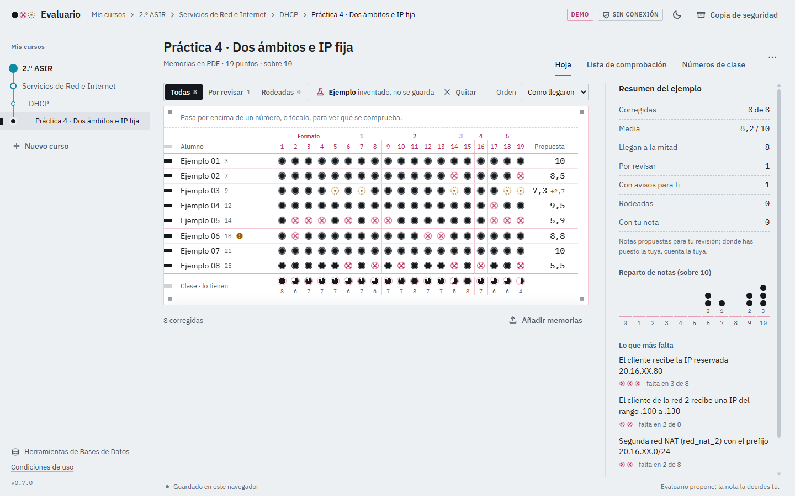
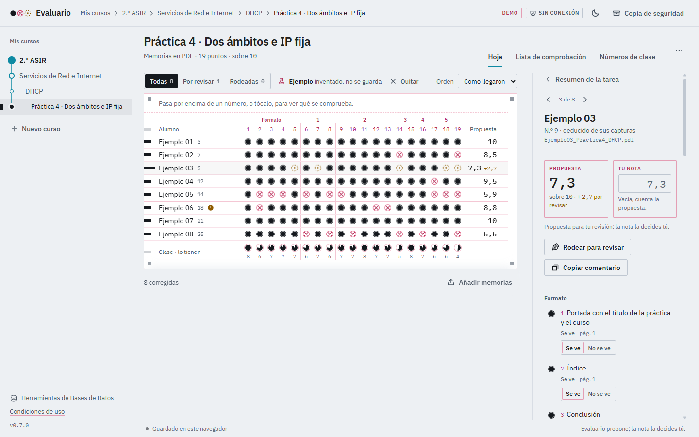
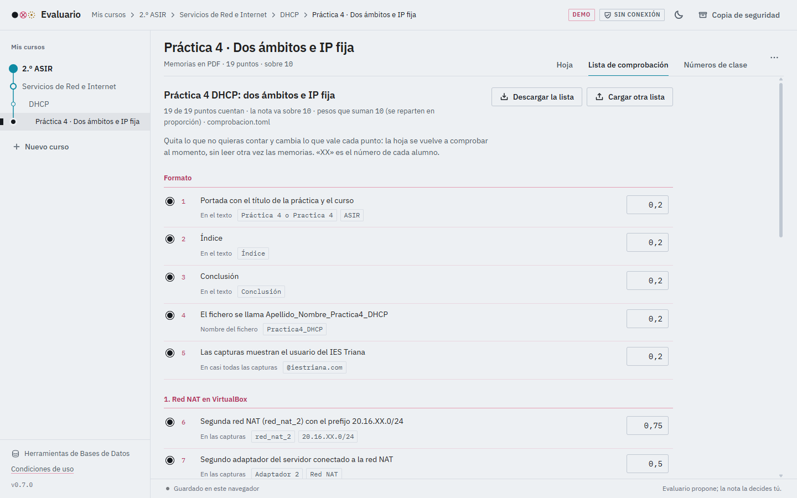

Vistas principales de la aplicación web Evaluario para pre-corrección de prácticas de Redes y Bases de Datos.
Cada fila representa un alumno y cada columna un punto comprobado en las capturas del PDF. Las burbujas indican visualmente qué se ha verificado, qué falta y qué requiere revisión docente.

Al seleccionar un alumno, el profesor visualiza la página exacta del PDF donde se encontró cada dato, la propuesta de nota y su casilla de decisión final.

Permite crear o modificar los puntos a buscar en las capturas (direcciones IP con el número del alumno, órdenes y salidas de configuración) y probarlos en directo sobre una memoria ya leída.
